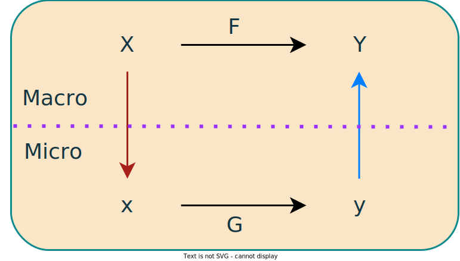

factors = [
{importance: 85, factor: "taste"},
{importance: 65, factor: "price"},
{importance: 62, factor: "health"},
{importance: 49, factor: "convenience"},
{importance: 37, factor: "sustainability"}
]
Plot.plot({
y: {domain: [0,100], label: "Importance (%)"},
x: {label: ""},
marks: [
Plot.barY(factors, {y: "importance", x: "factor", fill: d => d.importance}),
Plot.ruleY([0])
]
})Knowing Food (draft)
Warning
The notes and slides below are in a draft state and may be changed.
How do we obtain knowledge about food? What makes information about food and diet reliable? Is science the best method to study food? Who should we trust to explain the risks related to food? Why are there different food disciplines and which things do they study?
These are all epistemological questions, which relate to the nature of ’knowledge’. Approaching food like a scientist, a designer or a chef may involve different ways of knowing.
Direct link to slides for this lecture
In earlier lectures we saw how while the nutritional properties of food are critical, food is more than a collection of nutrients. Consider the factors that consumers deem important when purchasing a food product (from McClement’s Future Foods):
Health is but one aspect of this picture, and nutrition is just one aspect of health. When choosing any food it is important to know firstly that it is safe. There is thus an element of risk when choosing to eat something. Typically we do not have complete knowledge of the food’s history. Faced with this uncertainty we often have to rely on trust. This might involve trusting traditions, businesses, experts and/or regulations.
Knowing How and Knowing That
Most of us possess some ’know-how’ when it comes to food. Everyone has been eating food their entire lives, and most adults can acquire and prepare food in a reliable manner. This type of ’know-how’ is sometimes called procedural knowledge, which is contrasted with the ’know-that’ of science, sometimes called declarative knowledge.
Procedural knowledge often involves the following of recipes (procedures) step-by-step. These recipes will explain the actions necessary to achieve some goal without necessarily explaining how the steps work.
Declarative knowledge — on the other hand — involves the statement of facts in the form of definitions, concepts or mechanisms. It should be possible to determine if these statements are true/false or probable/improbable.
Science excels at providing us with facts that allow us to declare things about the world; in turn, this can allow us to understand recipes better, potentially improve them and possibly invent new ones.
Note
Both types of knowledge have their weaknesses.
In general, procedural knowledge can be difficult to communicate; it is not easy to learn how to drive by simply watching someone drive a car — you have to do it yourself.
It can also be inflexible when unexpected circumstances arise. For example, a recipe may call for ‘baking soda’ and if this ingredient is not in the pantry the procedure cannot be followed.
Declarative knowledge — in comparison — may be deemed ‘useless’ if not applied in some way; for example, the knowledge that hydroxyl ions increase pH is unlikely to interest someone who does not understand situations where such a pH increase matters.
Combining the two forms of knowledge is often productive. For example, if we know that baking soda functions in the recipe to alkalise the system (increase pH) then we can look for ingredients other than baking soda that achieve that same function.
Another useful way of thinking about procedural knowledge is that it is any kind of knowledge that — in principle — could be done by a computer or robot. One way of thinking about an algorithm is that it is a recipe that instructs a computer what to do. If the program is written in a correct format then the computer will simply do as it has been instructed. Approaching your education with the expectation that you will always be told what to do simply prepares you to follow instructions. This may lead to a job in which you will also follow instructions but it is these jobs that are most at threat from automation (with computers and robots). The wise approach is to develop the capacity to generate your own ideas and be a person who can design the procedures.
Reliable Knowledge
The best available definition of knowledge is that it consists of a Justified True Belief. One must have all three elements in order to have knowledge of something. If you believe something, and it turns out that it is true, but you cannot provide a good justification for the belief then you do not have knowledge - we might call this a ’lucky guess’. If you have a justification for something being true, and that thing is actually true, but you do not believe it, then you do not have knowledge - this we call ’denial’. If you believe in something, and have a good justification for doing so, but it turns out to be false, then you do not have knowledge - this is often called a ’false positive’. Thus, someone is only said to have knowledge if they believe something that is true and can justify that belief (with a good supporting explanation). What science is particularly good at is providing justifications for beliefs that are probably true. These justifications are made through a combination of theory and experiment.
Philosophers of science have long argued about what makes scientific knowledge so successful. These arguments are often complex and ingenious, due to the nuances involved. However, here are some claims that have received a lot of support:
- Many scientific claims are falsifiable: this means that in principle any scientific claim can potentially be disproven. The most reliable scientific claims are those that have stood the test of time and have not (yet) been falsified. This must be contrasted with claims that are not falsifiable; for example, the claim that human beings by their very nature are in a state of tension associated with the risk of poison and the reward of food is interesting, but it is not clear how an experiment could de devised to test this claim.” That such a claim cannot be falsified is not a strength because this means we cannot test if it is reliable.
- Scientific facts are often generalisable: while a recipe can be used to make one thing a scientific fact can often be extended into many different domains. For example, in food science, chemical reactions such as Maillard Browning can be applied to a wide variety of food products and used to explain phenomena associated with sensory properties as well as nutritional properties.
- Sources of scientific fact have been rigorously evaluated: after a scientist has finished a project they will submit their findings to a journal. The editor — usually an experienced scientist — will decide if the work is of sufficient quality; this might, for example, involve determining if the scientist used appropriate methods. If it is deemed to be a work of quality it is then evaluated by 2-3 anonymous reviewers. Any deficiencies that are identified will need to be fixed by the scientist. If published, the paper can ultimately be judged based on its influence (are people referencing it and using its findings?).
- Science involves building models of reality: scientists often observe effects that interest them (an unusual colour change). They then construct a causal model that explains this effect (two molecules interact to produce a coloured compound). The validity of this model is then tested (does this colour change still happen if one or the other molecule is missing?). If the process stopped at mere observation (wow, what an interesting colour) then it would not be scientific.
In the absence of good scientific explanations we often appeal to myths, analogies and metaphors. For example, the (unscientific) claim that searing meat “seals in the juices” is wrong and — in fact — searing accelerates the loss of juices. The French philosopher Gaston Bachelard referred to such ideas as epistemological obstacles, which are impediments to our thinking. He gave the example of the idea — popular in the 17th and 18th century — that foods are digested through fermentation in the body. It was known that fermentation of beer or wine could be accelerated by shaking the vessel they were contained within. For infants experiencing distress associated with indigestion a “shaking” treatment was soon suggested (which is of course very dangerous) on the basis that this would accelerate the digestion of their food and heal them (analogy: human body is like a vat of beer). It was not until the digestion-as-fermentation explanation was abandoned that progress could be made.
Searing of Meat
If you have watched any cooking show or ready any recipe books you will have encountered the concept of “searing”. The idea is that meat should be cooked in a pan at a very high temperature on both sides to “seal in the juices”.
This is a metaphorical idea similar to the old surgical method of cauterisation, in which bleeding was prevented using treatment of the area with hot metal.
When scientists studied the effect of searing they found that the weight of the meat decreased more significantly when seared. This is simply because more water (i.e., the juice) evaporated when exposed to the higher temperatures.
The scientists were not suggesting that searing is not effective but rather that the explanation for its effectiveness was incorrect. So they asked:
If searing is effective, but searing does not reduce moisture loss, what is the explanation for its effectiveness and how could this improve how we cook meat?
Searing also had other effects, such as increasing Maillard browning (occurs quickly in dry, hot conditions), which is associated with the development of colour and aroma. Knowledge of chemical reactions like this allows the scientist to find common means of explanation in a wide variety of situations.
Memory Devices
Critics of modern science allude to a pre-scientific time in which we obtained reliable knowledge through our senses, instincts and traditions. In reality, before modern science we were often simply informed by myths, some of which might have been reliable in limited circumstances but were generally unsound.
Fooled by Appearances
While some argue that the human senses are adept at supporting our judgements about the world they often mislead us.
When an object like a stick is inserted into water it appears crooked and when it is removed it is straight again. Of course, the stick is not breaking and unbreaking, and the scientific theory of refraction explains this.
To explain many everyday phenomena we need to either appeal to a scientific theory (refraction) or enhance our senses with instruments (microscopes).
The French philosopher Descartes was greatly troubled by the unreliability of the human senses. He performed a thought experiment wherein an evil demon constantly fooled him to the point where he could not trust what he saw or heard. Even in this uncertainty he could still (imagine himself to) think and know that he was thinking, which lead to his famous cogito:
I think, therefore I am
The unreliability of the senses (in cases like optical illusions) was one of the reasons that scientists and philosophers like Descartes began to place such a value on mathematical equations and exact experiments as ways to attain reliable knowledge about our observations.
Take for example the Doctrine of Signatures (DoS). This doctrine held that by studying the form (visual appearance) of things as they exist in the world, and recognising their resemblance to human forms (parts of the body), we can establish their particular usefulness to humans. In other words, we can infer the function of a food based on its form.
Some examples for you to visualise: red wine is good for the blood; walnuts are good for the brain; red meat is good for the muscles.
The DoS meme survived for centuries, but has largely died out (accept in some traditional medicinal practices) – why so? Presumably because developments in science generated more reliable ideas that were more useful in guiding human decisions.
Memes
Ideas emerge, die and survive in the history of a culture. Ideas that are stable (do not disappear abruptly) and are replicated (through repeated human behaviours) are sometimes referred to as memes. ’Meme’ is a term coined by evolutionary biologist and popular science writer Richard Dawkins. Dawkins coined the term to refer to the ’basic unit of cultural transmission’. It is a shortened form of ’mimeme’, which combined the Greek ’mimesis’ (meaning ’mimicking’) and ’gene’ (the biological unit of heredity). Dawkins had this to say about the concept in his best-selling The Selfish Gene: Examples of memes are tunes, ideas, catch-phrases, clothes fashions, ways of making pots or of building arches. Just as genes propagate themselves in the gene pool by leaping from body to body, so memes propagate themselves in the meme pool by leaping from brain to brain via a process which, in the broad sense, can be called imitation. If a scientist hears, or reads about, a good idea, he passes it on to his colleagues and students. He mentions it in his articles and his lectures. If the idea catches on, it can be said to propagate itself, spreading from brain to brain.
You are probably familiar with ’internet memes’: shortlived, viral phenomena that spread rapidly through the internet as people view and share them. These are, indeed, memes. The concept, however, has a broader meaning and usually refers to ideas that are persistant across longer time-scales. For a meme to survive it must be useful in some way, and then it must be assimilated and enacted. At any time a person, let’s call her Person A, can have a new idea, but for this idea to be assimilated by another, Person B, it must be communicated effectively.
This is typically achieved through a demonstration of its usefulness. Person B must ’guess’ what the idea is in Person B’s head, which can be very difficult to do accurately. Nonetheless, humans have a remarkable ability to get the ’jist’ of an idea that they can then enact, and if it proves useful then it can be transmitted throughout society as a meme.
DoS may have been successful as a mnemonic (a memory device), helping people to navigate an uncertain world when no better tool was available. As a theory it is unfalsifiable in at least two respects. Firstly, the interpretation of a ‘resemblance’ seems to be subjective, relying on a great deal of creativity. This makes it difficult to demonstrate as incorrect, as the meaning of a shape can always be interpreted differently to fit a given explanation. Secondly, it is often premissed on the idea that God chooses the appropriate forms to guide humans. Unfortunately, whether or not you believe in God it is impossible to establish his/her intentions.
There are also a wide variety of examples where following DoS could actively harm you (the cross-section of many mushrooms resembles an ear, but some of these mushrooms are still poisonous).
As an approach to choosing food DoS would be very restrictive, in that it artificially narrows the functionality of a given food. Consider you eat some carrots (eyes), brocolli (lungs) and meat (muscles) — what about your bones, your skin, your hair? You would need a lot on your plate to satisfy the needs of your entire body and a lot of time to find the appropriate foods. From chemical analysis of such foods we know that they share many parts in common, so that even if a food superficially resembles a body part it is likely to contribute to more than that body part when digested. In other words: the scientific approach to nutrition generalises better and once we know — for example — that a part called vitamin A exists we can find a variety of foods that contain that vitamin, all of which could potentially provide a similar benefit.
Now, clearly the subjective perception of shape has a powerful effect on people, and it arguably can serve as a mnemonic. There may therefore be a way to operationalise the notion of “shapes communicating function” in a technological context. However, this is not the same thing as assuming that DoS is a reliable way to choose what to consume.
Operationalisation
We have heard the concept of “operationalisation before”. It usually means to:
Take an abstract or vague concept and render in a testable or useful form
A famous case of operationaliation is the Turing Test. When Alan Turing proposed his test it was after many years of debates concerning the question:
Can machines think?
While Turing thought this was an interesting (philosophical) question he did not think it could be resolved.
In other words: it was a waste of time. His test, on the other hand, was tractable:
Can a machine convince someone that it is a person?
Today, with modern advances in AI it is arguably the case that machines can pass the Turing test; however, the question of whether machines can think is perhaps still beyond us.
Rationalisation, Technology and Scientism
Science, technology and engineering are tighly inter-woven in the food industry. Food scientists are expected to know what but also to know how. Discovering knowledge about food is the domain of science, developing processes to manufacture food is the domain of engineering and designing products that satisfy societal needs is the domain of technology. The resultant technology can itself become the object of food science, as can the process used to manufacture the product. The food scientist spans all three domains. As most food scientists are not ’pure scientists’ producing knowledge-for-knowledge’s-sake, they can also be thought to have additional responsibilities; for example, they must consider aesthetic (is the product attractive?) and ethical (is the process sustainable?) factors. It is thus more enlightening to consider the field of study as a “techno-science” than a science per se.
Knowing Why (technology)
Doing a good experiment can lead to better understanding. However, this tells us how things are but not how things should be.
When designing a product — for example — we must have a vision for that product. Questions of how things should be relate to what we value (ethically or aesthetically).
These questions are often called normative questions.
Science enables us to make more informed decisions about food. For a long time it was taken for granted that drinking beer or milk often coincided with illness. Louis Pasteur (1822-1895) discovered that these liquids did not spoil if they were heated and sealed from air. If the liquids were processed in this way then they were safer to consume. The scientific explanation is that there are organisms invisible to the naked eye that are ubiquitous (everywhere at all times), even in the air. These ’micro-organisms’ contaminate beer and milk, which then act as media for them to grow.
The presence of certain micro-organisms (pathogens) in food and drink cause human illnesses, but if we expose them to heat and prevent exposure to air we can render them safe. This technique, named pasteurisation after Pasteur, is responsible for saving millions of lives. The process is now so well-understood that food scientists know precisely what temperatures and heating times are required to ensure that food is safe. The story doesn’t stop there, however. When we heat food we don’t just kill bad microbes, we sometimes kill good microbes; in addition, there are chemical changes as well as biological ones, so heat treatments can sometimes cause changes in flavour, colour and vitamin levels due to chemical reactions. The invention of Pasteur was a major development, but food scientists have been working on a broad set of problems in this area ever since.
Even a process that appears to have obvious value — like pasteurisation — has been subject to criticism and claims that it is damaging to public health, which has required food scientists to remind people of the value of the technology.
Macro- and Micro-Levels of Explanation
A statement like this food process is bad for your health is not necessarily incorrect but it is vague as an explanation. It can be useful to think of this as a part of a larger explanatory model rather than simply a wrong explanation.
This statement occurs at the macro level based on loose observations and rough approximations. A scientist adds a finer level of explanation that completes the model (which might allow us to supplement the macro-level explanation or dismiss it entirely).
Thus, the process might make a nutrient less available to the body during digestion, which in turn contributes to a nutrient deficiency, with the latter being the actual cause of the health problem. The micro and macro levels are not incompatible, and they can work together when forming a good explanation.
This systematic approach to studying the world has been advocated in recent scientific articles concerning food and diet such as this (free) one but the basic idea was expressed by philosophers like Mario Bunge decades ago.
In the lectures we saw several practical examples that showed the move between different levels of explanation. This can be represented more generally using the following diagram:

- First there is a macro-level explanation (\(X \to Y\)), which is assumed to be causal.
- We move from macro to micro level — a micro-reduction (red arrow).
- This allows us to determine the actual underlying cause (\(x \to y \to Y\)).
- Often, it is not possible as a scientist to study \(F\) because it is not a causal relationship (or it is not sufficiently clear as an idea).
- Thus, we can instead study actual causes like \(G\).
- Once we have studied such causes we can return to the higher level by a macro-reduction (blue arrow).
- Typically, a systematic understanding of something requires knowledge at the micro and macro levels.
- Knowledge of only the macro level is fuzzy, imprecise and does little to inform decision-making.
- Knowledge of only the micro level is academic and impractical.
Many processes of scientific discovery or technological innovation begin with the recognition that there is something interesting at the macro level but it is not sufficiently well understood
It is not uncommon to encounter a criticism that modern society is too often guilty of “scientism”. In general, this can be defined as:
The belief that science is the only source of valid knowledge in all domains
When we think of some human activities:
- Singing a song
- Making friends
- Enjoying a beer
- Finding a date
It is not obvious how science can help us.
Furthermore, if we think of a big (moral) question like:
Should rich countries that contribute the most to climate change give more financial support to poor countries that are most exposed to the effects of climate change?
It is also not clear that science can help (it is a question of values and identifying the right action).
The issue of scientism is sometimes raised in relation to food and diet. Yet the scientific approach to food, unlike singing or dating, has had demonstrated success (reducing food poisoning, increasing availability, reducing food waste, more options, etc.).
This does not, however, mean that science necessarily has a role in all aspects of food. For example, figures from the field of molecular gastronomy have suggested that people could benefit from approaching cooking in a more scientific manner. We will discuss molecular gastronomy and its relation to food science and other Food Disciplines in later lectures.
References
Bennett, B. C. (2007). Doctrine of Signatures: An Explanation of Medicinal Plant Discovery or Dissemination of Knowledge? Economic Botany, 61, 246-255.
Bunge, M., (2000). Systemism: the alternative to individualism and holism. The Journal of Socio-Economics, 29, 147-157.
Fardet, A., & Rock, E. (2015). From a Reductionist to a Holistic Approach in Preventive Nutrition to Define New and More Ethical Paradigms. Healthcare, 3, 1054-1063.
Lucey, J. A. (2015). Raw Milk Consumption: Risk and Benefits. Nutrition Today, 50: 189-193.